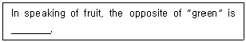
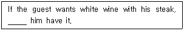
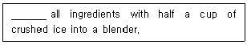
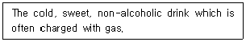
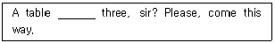
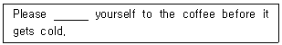
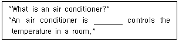
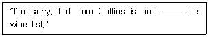
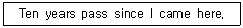

조주기능사 (2001-01-21 기출문제)
1과목: 주류학개론
1. canape란 무엇인가?
- 식사 전에 먹는 오드블
- 통조림 식품
- 과자의 일종인 술안주
- 칵테일의 이름
(정답률: 50%)

2. 다음의 탄산음료 중 설명이 옳지 못한 것은?
- 탄산가스가 함유된 천연광천수
- 천연과즙에 탄산가스를 함유한 것
- 순수한 탄산가스를 함유한 것
- 음료수에 천연감미료를 탄 것
(정답률: 73%)
3. Snifter에는 일반적으로 어떤 음료를 제공하는 것이 좋은가?
- Soft Drink
- Cocktail Drink
- Mixed Drink
- Armagnac 종류
(정답률: 54%)
4. 리큐르(Liqueur)는 식사 중 어느 코스에 제공하는가?
- 에피타이저(Appetizer)
- 생선(Fish)
- 스테이크(Steak)
- 디저트(Dessert)
(정답률: 59%)
5. 다음 중 북구라파 지역의 증류주로 유명한 것은?
- Vodka
- Tequila
- Aquavit
- Sherry
(정답률: 43%)
6. 살균되어 저장 가능한 맥주를 어떻게 표시하는가?
- Draught Beer
- Unpasteurized Beer
- Draft Beer
- Lager Beer
(정답률: 60%)
7. 일반적으로 Brandy의 숙성기간이 가장 오래된 표시는?
- V.V.O
- V.S.O
- V.S.O.P
- X.O
(정답률: 85%)
8. 다음 중 증류주가 아닌 것은?
- 위스키(Whisky)
- 진(Gin)
- 보드카(Vodka)
- 쿰멜(Kummel)
(정답률: 75%)
9. 다음 중 스카치 위스키가 아닌 것은?
- Seagram V.O
- White Horse
- Johnnie Walker
- V.A.T 69
(정답률: 25%)
10. 프랑스에서 생산되는 칼바도스(Calvados)는 어느 종류에 속하는가?
- 브랜디
- 진
- 와인
- 위스키
(정답률: 77%)
11. 다음 중 혼성주에 해당하는 것은?
- 알마냑(Armagnac)
- 콘 위스키(Corn Whisky)
- 코인트루(Cointreau)
- 자메이칸 럼(Jamaican Rum)
(정답률: 60%)
12. Sparkling Wine의 감도 중 맞지 않는 것은?
- Brut 1/2∼1%
- Demi Sec 7∼8%
- Doux 8∼10%
- Sec 2∼4%
(정답률: 7%)
13. 특별히 잘된 해의 포도로 만든 와인은 그 연호를 상표라벨에 표시한다. 그 명칭은?
- 에이지드 와인(Aged Wine)
- 클라렛(Claret)
- 빈티지 와인(Vintage Wine)
- 드라이 와인(Dry Wine)
(정답률: 62%)
14. 샴페인에 관한 설명 중 틀린 것은?
- 샴페인은 발포성 와인(Sparkling Wine)의 일종이다.
- 샴페인 원료는 적포도인 피노 누아르, 피노 뫼니에, 청포도인 샤르도네 세가지를 섞어서 만든다.
- 17세기말경 동 페리뇽(Dom Perignon)에 의해 만들어졌다.
- 샴페인 산지인 샴페인 지방은 이태리 북부에 위치해 있다.
(정답률: 28%)
15. 다음 중 서로 관련 사항이 없는 것은?
- Sugar cane – Perry
- Agave - Tequila
- Grape – Wine
- Apple - Cider
(정답률: 60%)
16. 리큐르(Liqueur)병에 D.O.M이라고 쓰여 있다. 이 말의 원문과 그 뜻은?
- 리큐르 중의 리큐르라는 말이다.
- 라틴어로서 베네딕틴 술을 말하며, 최선, 최대의 신에게 이 술을 드린다는 뜻이다.
- 베네딕틴의 최상품을 설명하는 말이다.
- 이탈리아산 약술로서 최상품을 뜻한다.
(정답률: 알수없음)
17. 양주에 표시된 도수 중 미국식 도수 표시(American proof) 86도는 우리나라식 도수 표시로는 몇 도인가?
- 43도
- 86도
- 172도
- 7.9도
(정답률: 82%)
18. 양주에서 술이 독한 맛을 표시하는 말이 아닌 것은?
- Strong
- Dry
- Hard
- Straight
(정답률: 42%)
19. 다음 중 보편적인 칵테일 파티시 안주로 가장 많이 제공되는 것은?
- peanut
- salad
- olive
- canape
(정답률: 46%)
20. 다음 중 칵테일에 사용되는 시럽과 가장 거리가 먼 것은?
- Ginger syrup
- Plain syrup
- Grenadine syrup
- Raspberry syrup
(정답률: 58%)
21. 얼음덩이와 함께 세게 쉐이크해서 마실 수 있는 리큐르(Liqueur)는 어느 것인가?
- Absinthe
- Creme de cacao
- Apricot Brandy
- Chartreuse
(정답률: 8%)
22. 러시안(Russian) 칵테일의 재료로 부적합한 것은?
- 보드카
- 드라이 진
- 올드 탐 진
- 크렘 드 카카오
(정답률: 알수없음)
23. 다음 중 장식으로 양파(Cocktail onion)가 필요한 것은?
- 마티니(Martini)
- 깁슨(Gibson)
- 좀비(Zombie)
- 다이커리(Caiquiri)
(정답률: 79%)
24. 다음 중 쉐이커(Shaker)와 관계가 없는 것은?
- 스퀴저(squeezer)
- 캡(cap)
- 스트레이너(strainer)
- 바디(body)
(정답률: 82%)
25. 양주 칵테일에서 롱 드링크(Long drinks)는 다음 중 어느 글라스에 담는 것이 가장 적당한가?
- Sherry Glass
- Highball Glass
- Cocktail Glass
- Champagne Glass
(정답률: 75%)
26. 1 quart는 몇 ㎖에 해당되는가?
- 약 60㎖
- 약 240㎖
- 약 760㎖
- 약 950㎖
(정답률: 42%)
27. 칵테일(Cocktail)의 도량 용어와 관계있는 단어는?
- 드라이(Dry)
- 드랍(Drop)
- 쉐이커(Shaker)
- 프로트(Float)
(정답률: 65%)
28. Sloe Gin의 설명 중 옳은 것은?
- 리큐르의 일종이며 Gin의 한 종류이다.
- 오얏나무 열매 성분을 Gin에 첨가한 것이다.
- Vodka에 그레나딘 시럽을 첨가한 것이다.
- 아주 천천히 분위기 있게 마시는 칵테일이다.
(정답률: 58%)
29. 다음 중 칵테일이 아닌 것은?
- 마티니
- 핑크 레이디
- 진 스트레이트
- 카카오 피즈
(정답률: 69%)
30. 뜨거운 칵테일은 어떤 것인가?
- 아이리시 커피
- 싱가폴 슬링
- 핑크 레이디
- 피나 콜라다
(정답률: 77%)
2과목: 주장관리개론
31. Flip과 관계가 없는 것은?
- 증류수
- 계란 흰자
- 설탕
- 향료
(정답률: 24%)
32. 연회용 메뉴 계획시 에피타이저 코스에 술을 권하려고 한다. 다음 중 가장 좋은 것은?
- 코디얼(Cordial)
- 포트 와인(Port Wine)
- 드라이 쉐리(Dry Sherry)
- 크림 쉐리(Cream Sherry)
(정답률: 55%)
33. 과일 메뉴와 같이 제공하기에 적합하지 않은 것은?
- Sweet Wine
- Port Wine
- Sherry
- Sparking Wine
(정답률: 36%)
34. 칼바도스(Calvados)는 보관온도상 다음 품목 중 어떤 것과 같이 두어도 좋은가?
- 백포도주
- 샴페인
- 생맥주
- 꼬냑
(정답률: 73%)
35. 접객원들은 식사를 서브하기 전에 와인을 권유, 주문 받도록 교육을 받는다. 그 이유는?
- 음료 가운데 원가(cost)가 가장 낮다.
- 저장 관리에 가장 용이한 상품이다.
- 식사와 와인은 밀접한 관계가 있다.
- 식사하는데 멋을 내기 위한 수단이기 때문이다.
(정답률: 91%)
36. 조주원의 직무에 관한 설명 중 틀린 것은?
- 주문에 의하여 신속 정확하게 조주, 제공한다.
- 칵테일은 수시로 자기 아이디어에 따라 조주한다.
- 글라스류와 바기물을 세척, 청결상태를 유지한다.
- 영업 시작 시간 전에 그 날의 소요품을 수령한다.
(정답률: 69%)
37. 와인 저장소(wine storage area cellar)의 최적 온도는?
- 12℃(55℉)
- 24℃(75℉)
- 7℃(45℉)
- 3℃(38℉)
(정답률: 62%)
38. 양조주 취급방법 중 부적당한 것은?
- 와인(wine)은 수평으로 눕혀서 코르크마개가 젖어 있도록 저장한다.
- 맥주(Lager beer)는 출고 후 약 3개월 정도는 실내온도에서 저장할 수 있다.
- 화이트 와인은 2∼3일 전에 냉장고에 저장하여 충분히 냉각시킨 후 판매한다.
- 선입 선출 방식에 의해 저장 관리한다.
(정답률: 20%)
39. 올드 패션드 글라스(Old fashioned glass)나 온 더 락스 글라스(On the rocks)의 용량은?
- 1∼2온스
- 3∼4온스
- 4∼6온스
- 6∼8온스
(정답률: 34%)
40. 일반적으로 양조주의 최대 알코올 생성량은?
- 5% 이하
- 20% 정도
- 50% 정도
- 60% 이상
(정답률: 40%)
41. 해피아워(Happy Hour)란?
- 행복한 시간
- 음료판매에 있어 정기판매액이 줄어들 때의 저녁시간
- 바에 초저녁 시간대에 음료판매를 활성화하기 위한 가격할인 판매시간
- 바(bar)에서의 한가한 시간에서 종업원이 즐거워할 때
(정답률: 91%)
42. 파 스톡(par stock)이란?
- 일일적정 요구량
- 일일적정 사용량
- 일일적정 재고량
- 일일적정 보급량
(정답률: 83%)
43. 음료메뉴(Beverage list) 설정방법 중 적당치 못한 것은?
- 경영 정책을 음료에 포함시킨다.
- 내용이 충실하며 고가로 판매할 수 있어야 한다.
- 계절감을 채택하여야 한다.
- 이미지(Image) 개선을 위해 특별 칵테일을 고안 판매한다.
(정답률: 71%)
44. 불특정 다수에게 선전하는 방법 중 틀린 것은?
- 신문광고(News Paper, Adv)
- 싸인 보드(Sign board)
- 다이렉트 메일(Direct mail)
- 빌 보드(Bill board)
(정답률: 65%)
45. 누출(漏出)을 방지하기 위한 관리방안은?
- 일드 테스트(Yield test) 실시
- 빈 카드(Bin card) 사용
- 스포트 체크(Spot check) 실시
- 레시피(Recipe) 사용준수
(정답률: 17%)
46. 위스키(Whisky)나 버머스(Vermouth) 등을 언 더 락스(On the rocks)로 제공할 때 준비하는 글라스는?
- Highball Glass
- Old Fashioned Glass
- Cocktail Glass
- Liquer Glass
(정답률: 79%)
47. 칵테일 부재료는 어떻게 보관하는가?
- Open한 부재료는 냉장고에 보관한다.
- 쓰다 남은 부재료를 상온에 보관한다.
- 모든 부재료는 냉동고에 보관한다.
- 햇볕이 많이 들어오는 곳에 보관한다.
(정답률: 84%)
48. 위생적인 주류 취급 중 맞지 않은 것은?
- 먼지가 많은 양주는 깨끗이 닦아 Setting한다.
- 와인은 세워서 보관하고 먼지는 항상 깨끗이 닦아 준다.
- 사용한 주류는 항상 뚜껑을 닫아 둔다.
- 창고에 보관할 때는 Bin Card를 작성한다.
(정답률: 91%)
49. 믹싱 글라스(Mixing Glass)의 설명 중 옳은 것은?
- 칵테일 조주시 음료 혼합물을 섞을 수 있는 기물이다.
- 쉐이커(Shaker)의 또 다른 명칭이다.
- 칵테일 음료 서비스에 사용되는 유리잔의 총칭이다.
- 칵테일에 혼합되어지는 과일이나 약초를 매싱하기 위한 기물이다.
(정답률: 65%)
50. 주장 내에서 필요한 기구류가 아닌 것은?
- Strainer(스트레이너)
- Ice Pick(아이스 픽)
- Pouring Lip(포어링 립)
- Cocktail Napkin(칵테일 넵킨)
(정답률: 36%)
3과목: 고객서비스영어
51. 다음 밑줄 친 곳에 알맞은 단어는?

- red
- juicy
- ripe
- sour
(정답률: 34%)
52. 다음 밑줄 친 곳에 알맞은 단어는?

- allow
- let
- leave
- make
(정답률: 42%)
53. Select one of the dessert wine in the following.
- Rose Wine
- Red Wine
- White Wine
- Sweet White Wine
(정답률: 77%)
54. 다음 밑줄 친 곳에 적당한 단어는?

- Doing
- Put
- Keeps
- Makes
(정답률: 59%)
55. 다음 영문에서 나타내는 것은?

- distilled liquor
- sodium chloride
- hard drink
- soft drink
(정답률: 67%)
56. 다음 밑줄 친 곳에 알맞은 단어는?

- on
- to
- for
- at
(정답률: 알수없음)
57. 다음 밑줄 친 곳에 알맞은 단어는?

- drink
- help
- like
- does
(정답률: 43%)
58. 다음 밑줄 친 곳에 들어갈 알맞은 것은?

- that
- what
- which
- something
(정답률: 36%)
59. 다음 문장에서 밑줄 친 곳에 알맞은 것을 고르시오.

- on
- of
- for
- against
(정답률: 50%)
60. 다음 문장의 내용으로 보아 밑줄 친 동사형을 바르게 변형시킨 보기는 어느 것인가?

- pass
- passed
- has passed
- have passed
(정답률: 65%)